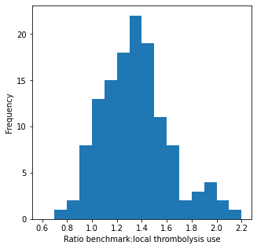
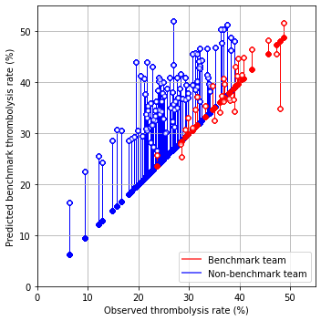

Compare local thrombolysis decisions with benchmark decisions
Contents
Compare local thrombolysis decisions with benchmark decisions¶
Benchmark decisions are decisions made at the top 30 hospitals as judged by their expected thrombolysis use in a standard 10K cohort of patients.
# Turn warnings off to keep notebook tidy
import warnings
warnings.filterwarnings("ignore")
import os
import matplotlib.pyplot as plt
import numpy as np
import pandas as pd
import matplotlib.cm as cm
import matplotlib.colors as colors
from matplotlib.lines import Line2D
# sklearn for pre-processing
from sklearn.preprocessing import MinMaxScaler
# TensorFlow api model
from tensorflow import keras
from tensorflow.keras import layers
from tensorflow.keras.models import Model
from tensorflow.keras.optimizers import Adam
from tensorflow.keras import backend as K
from tensorflow.keras.losses import binary_crossentropy
2022-06-12 17:21:03.434526: I tensorflow/stream_executor/platform/default/dso_loader.cc:49] Successfully opened dynamic library libcudart.so.10.1
Load data on predicted 10K corhort thrombolysis use at each hospital¶
thrombolysis_by_hosp = pd.read_csv(
'./output/10k_thrombolysis_rate_by_hosp.csv', index_col='hospital')
thrombolysis_by_hosp.sort_values(
'10k_thrombolysis', ascending=False, inplace=True)
thrombolysis_by_hosp.head()
| hospital.1 | 10k_thrombolysis | hosp_subnet_output | actual_thrombolysis | |
|---|---|---|---|---|
| hospital | ||||
| 9 | CNBGF2713O | 0.4700 | 0.005932 | 0.470588 |
| 25 | GKONI0110I | 0.4409 | 0.119403 | 0.389831 |
| 62 | MHMYL4920B | 0.4388 | 0.126297 | 0.472727 |
| 32 | HPWIF9956L | 0.4292 | 0.163297 | 0.478261 |
| 53 | KZKEZ2257Z | 0.4147 | 0.206979 | 0.386555 |
top_30_hopsitals = list(thrombolysis_by_hosp.head(30).index)
Define function to scale data¶
Scale input data 0-1 (MinMax scaling).
def scale_data(X_train, X_test):
"""Scale data 0-1 based on min and max in training set"""
# Initialise a new scaling object for normalising input data
sc = MinMaxScaler()
# Set up the scaler just on the training set
sc.fit(X_train)
# Apply the scaler to the training and test sets
train_sc = sc.transform(X_train)
test_sc = sc.transform(X_test)
return train_sc, test_sc
Get predicted decision for all patients at each hopsital¶
Combine test results for k_fold data, so that all inviduals are predicted from a test set.
data_loc = '../data/kfold_5fold/'
train_data, test_data = [], []
for i in range(5):
train_data.append(pd.read_csv(data_loc + f'train_{i}.csv'))
test_data.append(pd.read_csv(data_loc + f'test_{i}.csv'))
path = './saved_models/1d_modular/'
# Set up lists for observed and predicted
observed = []
predicted_proba = []
predicted = []
# Set up lists for observed and predicted
observed = []
predicted_proba = []
predicted = []
# Get data subgroups
subgroups = pd.read_csv('../data/subnet.csv', index_col='Item')
# Get list of clinical items
clinical_subgroup = subgroups.loc[subgroups['Subnet']=='clinical']
clinical_subgroup = list(clinical_subgroup.index)
# Get list of pathway items
pathway_subgroup = subgroups.loc[subgroups['Subnet']=='pathway']
pathway_subgroup = list(pathway_subgroup.index)
# Get list of hospital items
hospital_subgroup = subgroups.loc[subgroups['Subnet']=='hospital']
hospital_subgroup = list(hospital_subgroup.index)
# Loop through 5 k-folds
for k in range(5):
# Load data
train = pd.read_csv(f'../data/kfold_5fold/train_{k}.csv')
test = pd.read_csv(f'../data/kfold_5fold/test_{k}.csv')
# On first k, limit subgroups to fields present
# Due to improved data selection in this repository
if k == 0:
clinical_subgroup = [subgroup for subgroup in clinical_subgroup if
subgroup in list(train)]
pathway_subgroup = [subgroup for subgroup in pathway_subgroup if
subgroup in list(train)]
# OneHot encode stroke team
coded = pd.get_dummies(train['StrokeTeam'])
train = pd.concat([train, coded], axis=1)
train.drop('StrokeTeam', inplace=True, axis=1)
coded = pd.get_dummies(test['StrokeTeam'])
test = pd.concat([test, coded], axis=1)
test.drop('StrokeTeam', inplace=True, axis=1)
# Split into X, y
X_train_df = train.drop('S2Thrombolysis',axis=1)
y_train_df = train['S2Thrombolysis']
X_test_df = test.drop('S2Thrombolysis',axis=1)
y_test_df = test['S2Thrombolysis']
# Split train and test data by subgroups
X_train_patients = X_train_df[clinical_subgroup]
X_test_patients = X_test_df[clinical_subgroup]
X_train_pathway = X_train_df[pathway_subgroup]
X_test_pathway = X_test_df[pathway_subgroup]
X_train_hospitals = X_train_df[hospital_subgroup]
X_test_hospitals = X_test_df[hospital_subgroup]
# Convert to NumPy
X_train = X_train_df.values
X_test = X_test_df.values
y_train = y_train_df.values
y_test = y_test_df.values
# Scale data
X_train_patients_sc, X_test_patients_sc = \
scale_data(X_train_patients, X_test_patients)
X_train_pathway_sc, X_test_pathway_sc = \
scale_data(X_train_pathway, X_test_pathway)
X_train_hospitals_sc, X_test_hospitals_sc = \
scale_data(X_train_hospitals, X_test_hospitals)
# Load model
filename = f'{path}k_fold_model_{str(k)}.h5'
model = keras.models.load_model(filename)
# Get and store probablity
probability = model.predict(
[X_test_patients_sc, X_test_pathway_sc, X_test_hospitals_sc])
y_pred_test = probability >= 0.5
y_pred_test = y_pred_test.flatten() *1
predicted.append(y_pred_test)
observed.append(y_test)
predicted_proba.append(probability.flatten())
# Print accuracy
accuracy = np.mean(y_pred_test == y_test)
print(
f'Run {k+1}, accuracy: {accuracy:0.3f}')
2022-06-12 17:21:06.442785: I tensorflow/compiler/jit/xla_cpu_device.cc:41] Not creating XLA devices, tf_xla_enable_xla_devices not set
2022-06-12 17:21:06.443577: I tensorflow/stream_executor/platform/default/dso_loader.cc:49] Successfully opened dynamic library libcuda.so.1
2022-06-12 17:21:06.505962: I tensorflow/core/common_runtime/gpu/gpu_device.cc:1720] Found device 0 with properties:
pciBusID: 0000:21:00.0 name: Quadro P4000 computeCapability: 6.1
coreClock: 1.48GHz coreCount: 14 deviceMemorySize: 7.92GiB deviceMemoryBandwidth: 226.62GiB/s
2022-06-12 17:21:06.506028: I tensorflow/stream_executor/platform/default/dso_loader.cc:49] Successfully opened dynamic library libcudart.so.10.1
2022-06-12 17:21:06.509026: I tensorflow/stream_executor/platform/default/dso_loader.cc:49] Successfully opened dynamic library libcublas.so.10
2022-06-12 17:21:06.509144: I tensorflow/stream_executor/platform/default/dso_loader.cc:49] Successfully opened dynamic library libcublasLt.so.10
2022-06-12 17:21:06.511219: I tensorflow/stream_executor/platform/default/dso_loader.cc:49] Successfully opened dynamic library libcufft.so.10
2022-06-12 17:21:06.511678: I tensorflow/stream_executor/platform/default/dso_loader.cc:49] Successfully opened dynamic library libcurand.so.10
2022-06-12 17:21:06.513916: I tensorflow/stream_executor/platform/default/dso_loader.cc:49] Successfully opened dynamic library libcusolver.so.10
2022-06-12 17:21:06.514785: I tensorflow/stream_executor/platform/default/dso_loader.cc:49] Successfully opened dynamic library libcusparse.so.10
2022-06-12 17:21:06.518364: I tensorflow/stream_executor/platform/default/dso_loader.cc:49] Successfully opened dynamic library libcudnn.so.7
2022-06-12 17:21:06.518841: I tensorflow/core/common_runtime/gpu/gpu_device.cc:1862] Adding visible gpu devices: 0
2022-06-12 17:21:06.519344: I tensorflow/core/platform/cpu_feature_guard.cc:142] This TensorFlow binary is optimized with oneAPI Deep Neural Network Library (oneDNN) to use the following CPU instructions in performance-critical operations: SSE4.1 SSE4.2 AVX AVX2 AVX512F FMA
To enable them in other operations, rebuild TensorFlow with the appropriate compiler flags.
2022-06-12 17:21:06.522629: I tensorflow/core/common_runtime/gpu/gpu_device.cc:1720] Found device 0 with properties:
pciBusID: 0000:21:00.0 name: Quadro P4000 computeCapability: 6.1
coreClock: 1.48GHz coreCount: 14 deviceMemorySize: 7.92GiB deviceMemoryBandwidth: 226.62GiB/s
2022-06-12 17:21:06.522698: I tensorflow/stream_executor/platform/default/dso_loader.cc:49] Successfully opened dynamic library libcudart.so.10.1
2022-06-12 17:21:06.522737: I tensorflow/stream_executor/platform/default/dso_loader.cc:49] Successfully opened dynamic library libcublas.so.10
2022-06-12 17:21:06.522768: I tensorflow/stream_executor/platform/default/dso_loader.cc:49] Successfully opened dynamic library libcublasLt.so.10
2022-06-12 17:21:06.522799: I tensorflow/stream_executor/platform/default/dso_loader.cc:49] Successfully opened dynamic library libcufft.so.10
2022-06-12 17:21:06.522829: I tensorflow/stream_executor/platform/default/dso_loader.cc:49] Successfully opened dynamic library libcurand.so.10
2022-06-12 17:21:06.522860: I tensorflow/stream_executor/platform/default/dso_loader.cc:49] Successfully opened dynamic library libcusolver.so.10
2022-06-12 17:21:06.522890: I tensorflow/stream_executor/platform/default/dso_loader.cc:49] Successfully opened dynamic library libcusparse.so.10
2022-06-12 17:21:06.522920: I tensorflow/stream_executor/platform/default/dso_loader.cc:49] Successfully opened dynamic library libcudnn.so.7
2022-06-12 17:21:06.523507: I tensorflow/core/common_runtime/gpu/gpu_device.cc:1862] Adding visible gpu devices: 0
2022-06-12 17:21:06.523578: I tensorflow/stream_executor/platform/default/dso_loader.cc:49] Successfully opened dynamic library libcudart.so.10.1
2022-06-12 17:21:06.927033: I tensorflow/core/common_runtime/gpu/gpu_device.cc:1261] Device interconnect StreamExecutor with strength 1 edge matrix:
2022-06-12 17:21:06.927057: I tensorflow/core/common_runtime/gpu/gpu_device.cc:1267] 0
2022-06-12 17:21:06.927062: I tensorflow/core/common_runtime/gpu/gpu_device.cc:1280] 0: N
2022-06-12 17:21:06.927592: I tensorflow/core/common_runtime/gpu/gpu_device.cc:1406] Created TensorFlow device (/job:localhost/replica:0/task:0/device:GPU:0 with 6966 MB memory) -> physical GPU (device: 0, name: Quadro P4000, pci bus id: 0000:21:00.0, compute capability: 6.1)
2022-06-12 17:21:06.927916: I tensorflow/compiler/jit/xla_gpu_device.cc:99] Not creating XLA devices, tf_xla_enable_xla_devices not set
2022-06-12 17:21:07.156274: I tensorflow/compiler/mlir/mlir_graph_optimization_pass.cc:116] None of the MLIR optimization passes are enabled (registered 2)
2022-06-12 17:21:07.172670: I tensorflow/core/platform/profile_utils/cpu_utils.cc:112] CPU Frequency: 2599990000 Hz
2022-06-12 17:21:07.257735: I tensorflow/stream_executor/platform/default/dso_loader.cc:49] Successfully opened dynamic library libcublas.so.10
Run 1, accuracy: 0.852
Run 2, accuracy: 0.858
Run 3, accuracy: 0.851
Run 4, accuracy: 0.857
Run 5, accuracy: 0.850
Combine test results in a dataframe.
thrombolysis_predictions_at_own_unit_k_fold = []
for i in range(5):
df = pd.DataFrame()
df['unit'] = test_data[i]['StrokeTeam']
df['observed'] = observed[i]
df['predicted_thrombolysis'] = predicted[i]
df['predicted_proba'] = predicted_proba[i]
thrombolysis_predictions_at_own_unit_k_fold.append(df)
thrombolysis_predictions_at_own_unit = pd.concat(
thrombolysis_predictions_at_own_unit_k_fold, axis=0)
Get predictions at 30 benchmark hospitals¶
hospitals = top_30_hopsitals
top_30_predictions = []
# Get data subgroups
subgroups = pd.read_csv('../data/subnet.csv', index_col='Item')
# Get list of clinical items
clinical_subgroup = subgroups.loc[subgroups['Subnet']=='clinical']
clinical_subgroup = list(clinical_subgroup.index)
# Get list of pathway items
pathway_subgroup = subgroups.loc[subgroups['Subnet']=='pathway']
pathway_subgroup = list(pathway_subgroup.index)
# Get list of hospital items
hospital_subgroup = subgroups.loc[subgroups['Subnet']=='hospital']
hospital_subgroup = list(hospital_subgroup.index)
# Loop through k folds
for k_fold in range(5):
k_fold_predictions = []
# Load model
path = './saved_models/1d_modular/'
filename = f'{path}k_fold_model_{str(k_fold)}.h5'
model = keras.models.load_model(filename)
# Get k fold split
train = train_data[k_fold]
test = test_data[k_fold]
# If k=0, limit subgroups to fields present
# Due to improved data selection in this repository
if k_fold == 0:
clinical_subgroup = [subgroup for subgroup in clinical_subgroup if
subgroup in list(train)]
pathway_subgroup = [subgroup for subgroup in pathway_subgroup if
subgroup in list(train)]
# OneHot encode stroke team
coded = pd.get_dummies(train['StrokeTeam'])
train = pd.concat([train, coded], axis=1)
train.drop('StrokeTeam', inplace=True, axis=1)
coded = pd.get_dummies(test['StrokeTeam'])
test = pd.concat([test, coded], axis=1)
test.drop('StrokeTeam', inplace=True, axis=1)
# Split into X, y
X_train_df = train.drop('S2Thrombolysis',axis=1)
y_train_df = train['S2Thrombolysis']
X_test_df = test.drop('S2Thrombolysis',axis=1)
y_test_df = test['S2Thrombolysis']
# Split train and test data by subgroups
X_train_patients = X_train_df[clinical_subgroup]
X_test_patients = X_test_df[clinical_subgroup]
X_train_pathway = X_train_df[pathway_subgroup]
X_test_pathway = X_test_df[pathway_subgroup]
X_train_hospitals = X_train_df[hospital_subgroup]
X_test_hospitals = X_test_df[hospital_subgroup]
# Convert to NumPy
X_train = X_train_df.values
X_test = X_test_df.values
y_train = y_train_df.values
y_test = y_test_df.values
# Scale data
X_train_patients_sc, X_test_patients_sc = \
scale_data(X_train_patients, X_test_patients)
X_train_pathway_sc, X_test_pathway_sc = \
scale_data(X_train_pathway, X_test_pathway)
X_train_hospitals_sc, X_test_hospitals_sc = \
scale_data(X_train_hospitals, X_test_hospitals)
# Get number of hospitals
num_hospitals = len(X_test_hospitals_sc[0])
# Create test array for changing hospital ID
X_hospitals_alter = X_test_hospitals_sc.copy()
# Get classification for all patients at all hospials
patient_results = []
# Loop through setting hospital
hospital_results = []
for hosp in hospitals:
# Set all hospitals to zero
X_hospitals_alter[:,:] = 0
# Set test hospital to 1
X_hospitals_alter[:,hosp] = 1
# Get probability of thrombolysis
probability = model.predict(
[X_test_patients_sc, X_test_pathway_sc, X_hospitals_alter])
# Classify
classified = probability >= 0.5
patient_results.append(classified)
# Store
k_fold_predictions.append(classified * 1)
top_30_predictions.append(k_fold_predictions)
print(f'K-fold {k_fold+1} complete')
K-fold 1 complete
K-fold 2 complete
K-fold 3 complete
K-fold 4 complete
K-fold 5 complete
Reformat top 30 hospital predictions.
top_30_predictions has [a][b][c] where: [a] = k_fold [b] = hospital [c] = individual
benchmark_decisions_k_fold = []
for i in range(5):
df = pd.DataFrame()
df['home_unit'] = test_data[i]['StrokeTeam']
k_fold_predictions = top_30_predictions[i][:][:]
benchmark_yes_count = np.array(k_fold_predictions).sum(axis=0)
df['majority_vote'] = (benchmark_yes_count >= 15) * 1.0
benchmark_decisions_k_fold.append(df)
benchmark_decisions = pd.concat(benchmark_decisions_k_fold, axis=0)
benchmark_decisions.head()
| home_unit | majority_vote | |
|---|---|---|
| 0 | TXHRP7672C | 1.0 |
| 1 | SQGXB9559U | 1.0 |
| 2 | LFPMM4706C | 0.0 |
| 3 | MHMYL4920B | 0.0 |
| 4 | EQZZZ5658G | 1.0 |
thrombolysis_predictions_at_own_unit['majority_vote'] = \
benchmark_decisions['majority_vote']
thrombolysis_predictions_at_own_unit.head()
| unit | observed | predicted_thrombolysis | predicted_proba | majority_vote | |
|---|---|---|---|---|---|
| 0 | TXHRP7672C | 1 | 1 | 0.774167 | 1.0 |
| 1 | SQGXB9559U | 1 | 1 | 0.606846 | 1.0 |
| 2 | LFPMM4706C | 0 | 0 | 0.115273 | 0.0 |
| 3 | MHMYL4920B | 0 | 0 | 0.054328 | 0.0 |
| 4 | EQZZZ5658G | 1 | 1 | 0.889842 | 1.0 |
Check similarity of own decisions vs benchmark decisions.¶
same_decision = (
thrombolysis_predictions_at_own_unit['observed'] ==
thrombolysis_predictions_at_own_unit['majority_vote'])
print(f'Proportion same decision {same_decision.mean():0.3f}')
Proportion same decision 0.831
Count number thrombolysed at each hospital compared with benchmark¶
thrombolysis_counts = (thrombolysis_predictions_at_own_unit.groupby('unit').agg('sum').drop(
'predicted_proba', axis=1))
thrombolysis_counts.head()
| observed | predicted_thrombolysis | majority_vote | |
|---|---|---|---|
| unit | |||
| AGNOF1041H | 307 | 338 | 408.0 |
| AKCGO9726K | 528 | 562 | 566.0 |
| AOBTM3098N | 128 | 119 | 207.0 |
| APXEE8191H | 130 | 131 | 182.0 |
| ATDID5461S | 75 | 68 | 108.0 |
change = (thrombolysis_counts['majority_vote'].sum() /
thrombolysis_counts['observed'].sum())
print (f'Change in thrombolysis with benchmark vote: {change:0.3f}')
Change in thrombolysis with benchmark vote: 1.274
fig = plt.figure(figsize=(5,5))
ax = fig.add_subplot()
ratio = thrombolysis_counts['majority_vote'] / thrombolysis_counts['observed']
ax.hist(ratio, bins = np.arange(0.6, 2.3, 0.1))
ax.set_xlabel('Ratio benchmark:local thrombolysis use')
ax.set_ylabel('Frequency')
plt.show()

Add patient counts at units, and calculate thrombolysis rate¶
unit_count = thrombolysis_predictions_at_own_unit.groupby(
'unit').count()['observed']
thrombolysis_counts['patients'] = unit_count
thrombolysis_counts['observed_rate'] = (
thrombolysis_counts['observed'] / thrombolysis_counts['patients'])
thrombolysis_counts['benchmark_rate'] = (
thrombolysis_counts['majority_vote'] / thrombolysis_counts['patients'])
Add benchmark label
thrombolysis_counts['benchmark_unit'] = False
thrombolysis_counts['benchmark_unit'].iloc[top_30_hopsitals] = True
thrombolysis_counts
| observed | predicted_thrombolysis | majority_vote | patients | observed_rate | benchmark_rate | benchmark_unit | |
|---|---|---|---|---|---|---|---|
| unit | |||||||
| AGNOF1041H | 307 | 338 | 408.0 | 871 | 0.352468 | 0.468427 | False |
| AKCGO9726K | 528 | 562 | 566.0 | 1428 | 0.369748 | 0.396359 | True |
| AOBTM3098N | 128 | 119 | 207.0 | 585 | 0.218803 | 0.353846 | False |
| APXEE8191H | 130 | 131 | 182.0 | 574 | 0.226481 | 0.317073 | False |
| ATDID5461S | 75 | 68 | 108.0 | 312 | 0.240385 | 0.346154 | False |
| ... | ... | ... | ... | ... | ... | ... | ... |
| YPKYH1768F | 78 | 78 | 115.0 | 317 | 0.246057 | 0.362776 | False |
| YQMZV4284N | 111 | 112 | 121.0 | 470 | 0.236170 | 0.257447 | True |
| ZBVSO0975W | 108 | 108 | 173.0 | 432 | 0.250000 | 0.400463 | False |
| ZHCLE1578P | 263 | 210 | 332.0 | 1176 | 0.223639 | 0.282313 | False |
| ZRRCV7012C | 111 | 81 | 216.0 | 704 | 0.157670 | 0.306818 | False |
132 rows × 7 columns
thrombolysis_counts.head()
| observed | predicted_thrombolysis | majority_vote | patients | observed_rate | benchmark_rate | benchmark_unit | |
|---|---|---|---|---|---|---|---|
| unit | |||||||
| AGNOF1041H | 307 | 338 | 408.0 | 871 | 0.352468 | 0.468427 | False |
| AKCGO9726K | 528 | 562 | 566.0 | 1428 | 0.369748 | 0.396359 | True |
| AOBTM3098N | 128 | 119 | 207.0 | 585 | 0.218803 | 0.353846 | False |
| APXEE8191H | 130 | 131 | 182.0 | 574 | 0.226481 | 0.317073 | False |
| ATDID5461S | 75 | 68 | 108.0 | 312 | 0.240385 | 0.346154 | False |
fig = plt.figure(figsize=(5,5))
ax = fig.add_subplot()
# Plot non-benchmark hospitals in blue
mask = thrombolysis_counts['benchmark_unit'] == False
non_bench = thrombolysis_counts[mask]
for i, val in non_bench.iterrows():
start = [non_bench['observed_rate'] * 100,
non_bench['observed_rate'] * 100]
end = [non_bench['observed_rate'] * 100,
non_bench['benchmark_rate'] * 100]
ax.plot(start, end, c='b', lw=1, zorder=1)
ax.scatter(start[0], start[1], marker='o', facecolors='b', edgecolors='b',
s=20, zorder=2, alpha=0.6)
ax.scatter(end[0], end[1], marker='o', facecolors='w', edgecolors='b',
s=20, zorder=2, alpha=0.6)
# Plot benchmark hospitals in red
mask = thrombolysis_counts['benchmark_unit'] == True
bench = thrombolysis_counts[mask]
for i, val in bench.iterrows():
start = [bench['observed_rate'] * 100,
bench['observed_rate'] * 100]
end = [bench['observed_rate'] * 100,
bench['benchmark_rate'] * 100]
ax.plot(start, end, c='r', lw=1, zorder=1)
ax.scatter(start[0], start[1], marker='o', facecolors='r', edgecolors='r',
s=20, zorder=2, alpha=0.6)
ax.scatter(end[0], end[1], marker='o', facecolors='w', edgecolors='r',
s=20, zorder=2, alpha=0.6)
# Add mods
ax.set_xlabel('Observed thrombolysis rate (%)')
ax.set_ylabel('Predicted benchmark thrombolysis rate (%)')
ax.set_xlim(0, 55)
ax.set_ylim(0, 55)
ax.grid()
custom_lines = [Line2D([0], [0], color='r', alpha=0.6, lw=2),
Line2D([0], [0], color='b', alpha=0.6, lw=2)]
plt.legend(custom_lines, ['Benchmark team', 'Non-benchmark team'],
loc='lower right')
plt.tight_layout()
plt.savefig('output/benchmark_thrombolysis.jpg', dpi=300)
plt.show()

Save comparisons of decisions¶
thrombolysis_predictions_at_own_unit.to_csv(
'./predictions/benchmark_decisions_1d_modular.csv', index=False)
test_collated = pd.concat(test_data, axis=0)
test_collated.to_csv('./predictions/test_features_collated.csv', index=False)